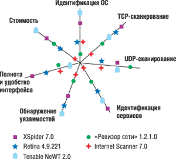

>Алексей Марков, к. т. н., доцент,
Сергей Миронов, Валентин Цирлов
ЗАО «НПП «Безопасные информационные технологии»
http://www.npp-bit.ru
Сегодня развитие информационных систем и технологий сопровождается ростом доли угроз, связанных с наличием уязвимостей программных ресурсов. Широкое распространение средств реализации таких угроз, в том числе вирусного типа, делает чрезвычайно актуальным применение различных систем анализа защищенности. При аудите безопасности, аттестации и сертификации информационных систем широко используются сетевые сканеры уязвимостей (vulnerability scanner), позволяющие проводить инвентаризацию сети и идентификацию уязвимостей [1]. В настоящее время на рынке программных средств представлено достаточно много подобных сканеров: от условно-бесплатных и с открытым кодом до специализированных комплексов аудитора информационной безопасности. В данной статье рассмотрены особенности сетевых сканеров, функционирующих в среде Windows.
Возможности сетевых сканеров
Сетевые сканеры - это средства анализа защищенности сети путем сканирования и зондирования сетевых ресурсов с целью выявления их уязвимостей. Применение сканеров позволяет прежде всего решать следующие задачи:
- инвентаризация ресурсов, включающих устройства сети, ОС, службы и ПО;
- идентификация и анализ уязвимостей;
- подготовка отчетных материалов, возможно, с описанием проблем и вариантами их устранения [2-4].
Чтобы проанализировать эффективность решения этих задач, мы выбрали пять сканеров:
- "Ревизор сети" 1.2.1.0 ("ЦБИ-сервис", http://www.cbi-info.ru);
- XSpider 7.0 (Positive Technologies, http://www.ptsecurity.ru);
- Retina 4.9.221 (eEye Digital Security, http://www.eeye.com);
- Tenable NeWT 2.0 (Tenable Network Security, http://www.tenablesecurity.com);
- Internet Scanner 7.0 (Internet Security Systems, http://www.iss.net).
Предпочтение при выборе отдавалось отечественным сканерам, проходящим сертификацию в нашей стране, - XSpider и "Ревизор сети". Выбор Internet Scanner (IS) обусловлен его лидирующим положением по объему продаж и декларируемому количеству обнаруживаемых уязвимостей [5]. Из стоимостных соображений в список был включен широко известный и доступный на некоммерческой основе сканер NeWT (Windows-порт Nessus). Кроме того, был добавлен достаточно распространенный сканер Retina [5, 6]. Все сканеры функционируют в среде Windows и имеют нераспределенную архитектуру (табл. 1).
Таблица 1. Характеристики сравниваемых сетевых сканеров
| Оцениваемый фактор | Ревизор сети | XSpider | Retina | NeWT | IS |
| Поддержка CVE (MITRE) | - | - | + | + | + |
| Примерные требования к объему дискового пространства, Мбайт | 50 | 10 | 30 | 45 | 300 |
| Механизм обновлений | Удаленный сервер | Удаленный/ локальный сервер | Удаленный сервер | Удаленный сервер | Удаленный сервер |
| Ориентировочная стоимость лицензии на 100 IP-адресов, у.е. | 4000 | 1200 | 4080 | Бесплатно для сетей класса С; 1200 - полная лицензия | 11319 |
Отметим, что при испытаниях не ставилась цель провести всестороннее академическое исследование сканеров; не проверялись также возможности сканеров как инструмента хакерских атак. Поэтому в качестве среды испытаний были выбраны типовые объекты информационных систем, в реальности часто подлежащие проверкам по безопасности. Испытательный стенд включал подсеть класса C с рабочими станциями, функционирующими под управлением ОС Microsoft Windows 95/98/NT 4.0 SP1 Server/2000 Professional/Server 2003, MCBC 3.0, Red Hat Linux 7.1. Выбор отечественной защищенной МСВС не случаен - эта ОС рекомендована для построения автоматизированных систем в защищенном исполнении по линии госзаказа. Помимо стандартных служб, использовались почтовые серверы Kerio 5.5.0, Merak 4.4.1, Web-серверы Apache 2.0.50, IIS 2.0, IIS 6.0, FTP-сервер BlackMoon 2.2.3, Microsoft SQL Server 8.00.760. Установка всех средств и систем выполнялась в режимах по умолчанию. Нестандартные серверные компоненты и средства межсетевого экранирования отсутствовали, параметры протоколов стека TCP/IP были установлены в значения по умолчанию.
В ходе тестов некоторые параметры настройки подсистем защиты изменяли в сторону снижения степени безопасности, с тем чтобы контролировать возможности сканеров, позволяющие выявлять ошибки администрирования.
К основным проверкам были отнесены следующие:
- Оценка качества сканирования портов и возможности идентификации ОС и сервисов;
- Оценка возможности обнаружения уязвимостей;
- Анализ удобства интерфейса и полноты формирования отчетов.
Методика оценки
Процедура оценки качества инвентаризации ресурсов была разбита на следующие проверки:
- сканирование TCP- и UDP-портов;
- идентификация ОС;
- идентификация TCP- и UDP-сервисов.
Для первой проверки удобнее использовать сканеры портов (например, nmap), однако сканеры уязвимости определяют активные сетевые сервисы, используя результаты, полученные на этапе сканирования портов. Поэтому данная проверка представляется важной.
Сканирование TCP- и UDP-портов проводилось при фиксированной конфигурации испытательного стенда, затем результаты были сопоставлены с реальным перечнем открытых портов, полученных с использованием штатных средств соответствующей ОС. Экспертные оценки выставлялись следующим образом: +1 балл - правильно определенный открытый порт; -1 - закрытый порт, ошибочно определенный как открытый, или открытый порт, ошибочно определенный как закрытый.
Идентификация ОС - это базовая задача при сборе информации об удаленном компьютере. Качество идентификации ОС служит хорошим показателем возможностей идентификации сервисов в целом, поскольку определение точной версии ОС требует достаточно сложных комплексных методов.
Качество идентификации ОС оценивалось по результатам сканирования в баллах по следующей шкале: +3 балла за точно идентифицированную ОС (с точностью до версии); +1 балл за правильно идентифицированное семейство ОС; 0 за выдачу списка возможных семейств (например, Windows и HP), в котором содержится правильный ответ; -1 балл за неправильно идентифицированную ОС.
Дополнительно был проведен анализ возможностей идентификации ОС с нестандартным набором сетевых сервисов и нестандартными параметрами протоколов стека TCP/IP.
Идентификация сервисов - одна из основных задач любого сканера, так как без корректного определения версий активных сетевых служб невозможно выполнить анализ их уязвимостей. Возможности идентификации сервисов анализировались путем сканирования компьютеров из тестовой подсети, на которых были сконфигурированы дополнительные серверные компоненты. Результаты сканирования сравнивались с реальным перечнем.
Качество идентификации сервисов оценивалось в соответствии со следующей градацией: +3 балла за точно идентифицированный сервис (с точностью до версии); +1 балл за точно идентифицированное семейство сервисов; -1 балл за неидентифицированный сервис; -3 балла за ошибочно идентифицированный сервис.
Выбор системы баллов обусловлен тем, что практическое значение может иметь только точная идентификация TCP- или UDP-сервиса. Идентификация семейства сервисов, наверное, в ряде случаев полезна, однако явно недостаточна.
Качество обнаружения уязвимостей - это основная характеристика сканера безопасности, но она труднее всего поддается формальной оценке. Для анализа были отобраны хорошо известные уязвимости для данных версий продуктов. Оценки выставлялись по следующим правилам: + 2 балла за точно идентифицированную уязвимость; -1 балл за ложное срабатывание; -2 балла за существующую, но не идентифицированную уязвимость.
Было решено не учитывать степень критичности уязвимостей по причине условности такого деления, а также их различия для разных продуктов. При этом очевидно, что любая некорректность при идентификации уязвимостей нежелательна.
При анализе удобства работы учитывались следующие факторы:
- наличие планировщика (для проведения тестирования по расписанию);
- возможность создания профилей проверок (пользовательских наборов проверок);
- возможность генерации отчета для технического специалиста, содержащего подробную информацию о проведенных проверках и их результатах;
- возможность генерации отчета для руководителя, содержащего обобщенную высокоуровневую информацию об исследованной системе и о результатах проверок;
- возможность приостановки сканирования;
- возможность пересканирования отдельных сервисов (что может быть полезно, например, в случае перезагрузки целевого компьютера).
Помимо этого, для каждого из сканеров эксперты выставляли субъективную оценку удобства интерфейса пользователя.
Результаты
Сканирование портов
При сканировании TCP-портов все сканеры, за исключением Internet Scanner, в целом справились со сканированием портов; незначительно лидировал в этом тесте XSpider (табл. 2). В лабораторных условиях продукт ISS показал неожиданно низкий результат.
Результаты сканирования UDP-портов оказались неудовлетворительными для всех сканеров. Лучше других показали себя "Ревизор сети" и Internet Scanner, однако оба сканера выдали ошибочные сообщения при сканировании рабочих станций в среде МСВС. Таким образом, победителей в данном тесте просто нет.
Таблица 2. Результаты сканирования портов (в баллах)
| Windows 2000 Professional SP3 | МСВС 3.0 | Windows Server 2003 | Общий балл | |
|
TCP-сканирование
|
||||
| Ревизор сети | +1 | +18 | +7 | +26 |
| XSpider | +3 | +12 | +17 | +32 |
| Retina | +3 | +22 | +5 | +30 |
| NeWT | +1 | +10 | +17 | +28 |
| IS | -5 | -28 | -5 | -38 |
|
UDP-сканирование
|
||||
| Ревизор сети | 0 | Ошибка | -6 | - |
| XSpider | -5 | -14 | -16 | - 35 |
| Retina | -6 | -16 | -20 | - 42 |
| NeWT | -6 | -16 | -16 | - 38 |
| IS | +4 | Ошибка | -20 | - |
Идентификация ОС
При идентификации ОС сканеры удовлетворительно определили ОС линейки Windows, показав менее точные результаты в случае Linux. Лучшие результаты (табл. 3) продемонстрировал сканер NeWT, который определил все системы с точностью до версии или версии ядра. XSpider стабильно определил семейство ОС. Недостаточно высокими оказались результаты "Ревизора сети".
Таблица 3. Результаты идентификации ОС (в баллах)
| Windows'95 OSR2 | Windows'98 | Windows NT 4.0 Server SP1 | Windows 2000 Professional SP3 | Windows Server 2003 | MCBC 3.0 | Red Hat Linux 7.1 | Общий балл | |
| Ревизор сети | -1 | -1 | 0 | +1 | 0 | -1 | -1 | -3 |
| XSpider | +1 | +1 | +3 | +1 | +1 | +1 | +1 | +9 |
| Retina | -1 | -1 | +3 | +3 | +3 | -1 | -1 | +5 |
| NeWT | +3 | +3 | +3 | +3 | +3 | +3 | +3 | +21 |
| IS | -1 | -1 | +3 | +3 | +3 | -1 | -1 | +5 |
|
Нестандартная настройка стека
|
||||||||
| Ревизор сети | -3 | -3 | -6 | |||||
| XSpider | +1 | +1 | +2 | |||||
| Retina | -1 | -1 | -2 | |||||
| NeWT | +3 | +3 | +6 | |||||
| IS | -1 | -1 | -2 | |||||
Идентификация сервисов
При идентификации TCP-сервисов (табл. 4) с заметным отрывом лидировали XSpider и NeWT (более 80% правильных откликов). Весьма низкий результат показал IS - ни один сервис не был идентифицирован с точностью до версии.
Результаты идентификации UDP-сервисов оказались отрицательными для всех сканеров: не было идентифицировано и половины сервисов. Значительное число ошибочно определенных несуществующих сервисов - на счету "Ревизора сети". Лучший результат принадлежит XSpider, но такое "лидерство" вряд ли можно признать удовлетворительным (победителя в данном тесте опять-таки нет).
Таблица 4. Результаты идентификации сервисов (в баллах)
| Windows NT 4.0 Server SP1 | Windows 2000 Professional SP3 | Windows Server 2003 | MCBC 3.0 | Общий балл | |
|
TCP-сервисы
|
|||||
| Ревизор сети | +24 | +10 | +5 | +19 | +58 |
| XSpider | +33 | +26 | +42 | +10 | +111 |
| Retina | +23 | +22 | +12 | +24 | +81 |
| NeWT | +30 | +24 | +30 | +22 | +106 |
| IS | +8 | +3 | -5 | +11 | +17 |
|
UDP-сервисы
|
|||||
| Ревизор сети | +1 | +1 | 0 | -66 | -64 |
| XSpider | -1 | -3 | -7 | -2 | -13 |
| Retina | -5 | -5 | -9 | -2 | -21 |
| NeWT | -5 | -3 | -9 | -12 | -29 |
| IS | -5 | -5 | -9 | -12 | -31 |
Анализ уязвимостей
По результатам анализа уязвимостей можно выделить NeWT, XSpider и Retina при явном лидерстве первого (табл. 5). IS показал в целом недостаточно высокие результаты, однако существенно лучше остальных справился с анализом конфигураций механизмов безопасности Windows (некорректные настройки политики паролей и разделяемые ресурсы).
Меньше всего ложных срабатываний отмечено у XSpider и IS. Весьма много ложных срабатываний показал "Ревизор сети", обнаруживший уязвимости несуществующих сервисов. Так, даже после корректной идентификации Web-сервера сканер обнаружил уязвимости для совершенно другого сервера.
Таблица 5. Показатели возможностей обнаружения уязвимостей (в баллах)
| Windows NT 4.0 Server SP1 | Windows 2000 Professional SP3 | Windows Server 2003 | MCBC 3.0 | Общий балл | |
| Ревизор сети | -5 | -1 | -2 | -1 | -9 |
| XSpider | -4 | 0 | +2 | +8 | +6 |
| Retina | 0 | -3 | +2 | +3 | +2 |
| NeWT | -8 | +9 | +14 | +11 | +26 |
| IS | +8 | -11 | -7 | -5 | -20 |
Сравнение генераторов отчетов
Сравнительный анализ генераторов отчетов (табл. 6) показал, что все сканеры обеспечивают формирование отчетных форм и экспорт их в HTML, однако наиболее полно этот механизм реализован у IS: отчет содержит подробные пошаговые инструкции по устранению выявленных уязвимостей, имеет удобную структуру и может быть экспортирован во все распространенные форматы. Чрезвычайно лаконично организован отчет NeWT.
Относительно интерфейса следует указать, что крайне удобная возможность пересканирования отдельного сервиса присутствует только у XSpider. Из наиболее досадных недостатков интерфейса можно отметить трудно интерпретируемые переводы на русский язык названий служб в "Ревизоре сети", например: "Протокол загрузки сервера", "Протокол пересылки файлов" и т. д.
Таблица 6. Оценка удобства и полноты интерфейса (в баллах)
| Оцениваемый фактор | Ревизор сети | XSpider | Retina | NeWT | IS |
| Наличие планировщика | - | +2 | +2 | - | +2 |
| Возможность создания профилей проверок | + 3 | + 3 | + 3 | + 3 | + 3 |
| Возможность генерации отчета для технического специалиста | + 3 | + 3 | + 3 | + 3 | + 4 |
| Возможность генерации отчета для руководителя | + 3 | + 3 | + 3 | - | + 3 |
| Возможность приостановки сканирования | - | +2 | - | +2 | - |
| Возможность пересканирования отдельных сервисов | - | +2 | - | - | - |
| Удобство интерфейса пользователя | +4 | +5 | +4 | +3 | +4 |
| Документация на русском языке | +2 | +2 | - | - | - |
| Общий балл | +15 | +22 | +15 | +11 | +16 |
Следует отметить недостатки, присущие всем сканерам, а именно: отсутствуют возможности автоматизации исправлений и автоматизированный контроль изменений в ресурсах сети после последнего сканирования; нет также возможности добавить собственные проверки. Демо-версии продуктов имеются только у XSpider, NeWT, IS.
Итоги
В заключение следует сказать, что трудно выделить абсолютно лучший сканер безопасности - все сканеры по-разному справляются с различными задачами. Их достоинства и недостатки в сравнении иллюстрирует многопараметрическая диаграмма (см. рисунок).
|  | Результаты сравнительного анализа сканеров.
|
В то же время можно сделать некоторые общие выводы.
1. Все сканеры недостаточно качественно идентифицируют UDP-сервисы, что, очевидно, связано с особенностями метода UDP-сканирования.
2. Сканеры лучше работают с ОС линейки Windows NT, чем с Linux. Возможно, этот результат связан с большей стандартизованностью ОС Microsoft.
3. Самый дорогостоящий сканер IS продемонстрировал в ряде случаев весьма невысокие результаты, тогда как представитель семейства Nessus, доступный на некоммерческой основе, оказался одним из лучших.
4. В лабораторных условиях NeWT и XSpider обеспечили наилучшие показатели (разница между ними находится в пределах статистической погрешности), хорошие результаты показал сканер Retina, несколько отстают IS и "Ревизор сети".
Таким образом, проведенное исследование позволяет говорить о целесообразности использования нескольких сканеров уязвимостей при аудите безопасности или в ходе аттестационных и сертификационных испытаний информационных систем и межсетевых СЗИ.
Источники дополнительной информации
|